1. System V
El objetivo de la práctica es la de crear nuestro propio servicio.
Bien, el primer paso es iniciar nuestro sistema operativo Debian y nos vamos a la ruta "/etc" y creamos la carpeta "kup".
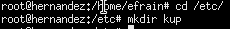Seguidamente, entramos en la carpeta "kup" y creamos el archivo "kup.log" vacío.
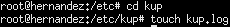1.1 Script demonio
Ahora, vamos a la siguiente ruta: "/usr/local/bin/2 y creamos el script "kupd" que será nuestro demonio. Este script será un bucle que ejecutará una tarea de forma repetitiva.
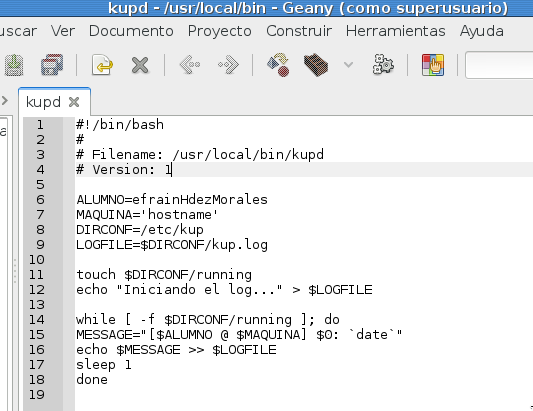
El siguiente paso será darle permisos de ejecución al script.
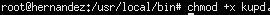Tras esto, ejecutamos el script en segundo plano con el siguiente comando. Además, veremos los mensajes que aparecen desde nuestro .log "cat /etc/kup/kup.log".
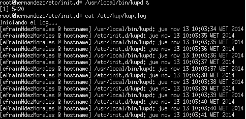Por último, en este paso, "terminamos" nuestro servicio con el comando:
Comprobamos si el servicio se ha terminado:
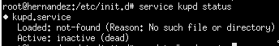1.2 Script de control
Crearemos un script que controlará el inicio/parada de nuestro demonio, al estilo System V.
Ahora vamos a crear un script "/etc/init.d/kup" con ruby, por lo que lo instalamos si no se encontraba instalado.
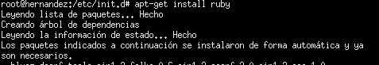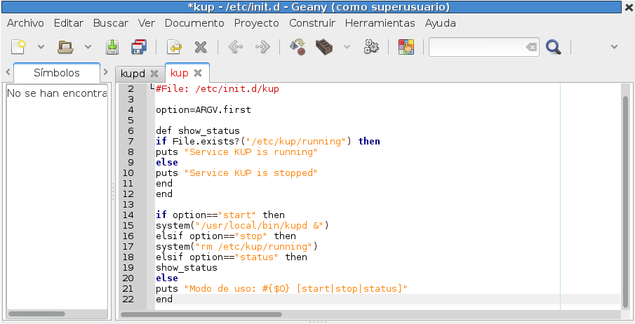
Damos permisos de ejecución a nuestro script de control.
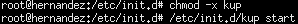Si ejecutamos ahora "update-rc.d mydaemon defaults" obtenemos la siguiente salida:
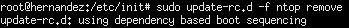Lo que ha ocurrido es que los de Debian han decidido hacer cumplir la norma LSB (Linux Standard Base) 3.1 para los script de arranque basados en dependencias, por lo que ahora para incluir un script en /etc/init.d/ tiene que cumplir una serie de normas especificadas aquí según el capitulo 20 de LSB 3.1.
Por lo tanto, ahora hay que usar insserv, una herramienta para organizar la secuencia de arranque usando las dependencias de los scripts LSB de initd.d:
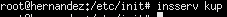insserv no genera salida alguna si todo ha ido bien. Tanto la forma antigua como la nueva requieren que el script de inicio este presente en /etc/init.d. Además, actualmente, para arranque basado en dependencias, el script ha de ser un LSB init script y cumplir con estos requisitos y expresar sus dependencias de arranque con un bloque similar a este dentro del script alojado en /etc/init.d:
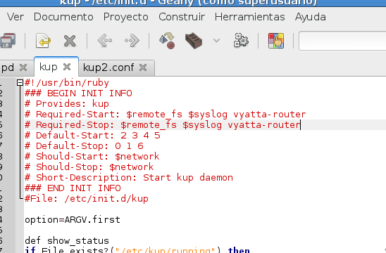Comprobamos que los directorios /etc/rc*.d contienen ahora un archivo que hace referencia al orden de arranque o apagado de ntop.
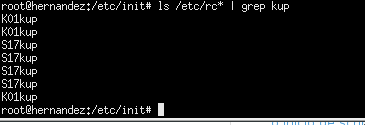2. Upstart
Ahora vamos a configurar el servicio, al estilo Upstart.
Debido a que en Debian no está instalado upstart, procedemos a su instalación.
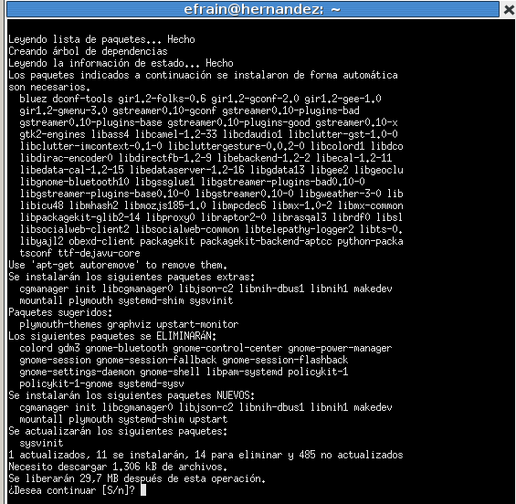Seguidamente, creamos un fichero /etc/init/kup2.conf con el siguiente contenido:
#
# Ejemplo /etc/init/kup2.conf
#
description "Servicio KUP2"
start on runlevel [2345]
stop on runlevel [!2345]
pre-start script
test -x /usr/local/bin/kupd || { stop; exit 0; }
end script
exec /usr/local/bin/kupd
Después, ejecute el script de la siguiente forma: "service kup2 start" pero no funcionaba. El problema me da que radica en la instalación de upstart que al final tira un error y vuelve a ejecutar el comando de la instalación y me lo vuelve a "instalar".